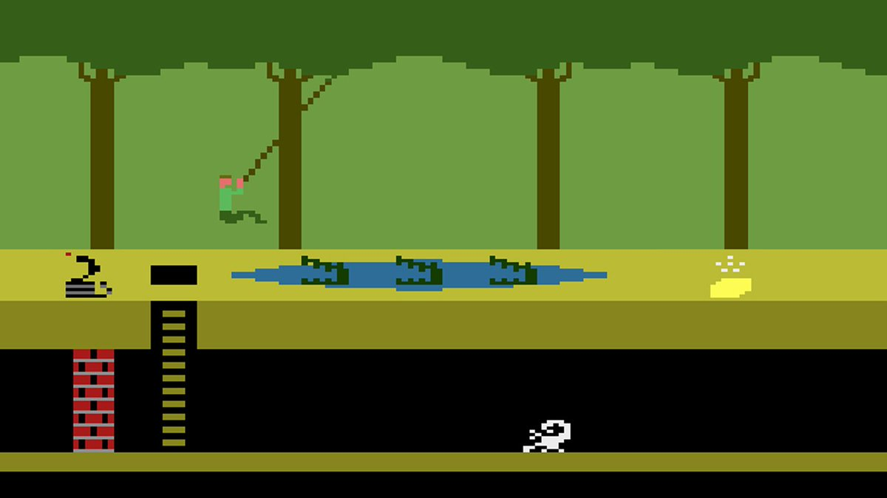

postado em 28/11/2022
Introdução Desde a década de 1970, os jogos eletrônicos atraem adeptos de todas as idades. Para os mais "velhinhos" vale lembrar os primeiros videogames e sua evolução: Telejogo, Atari, Odyssei, Megadrive, Nintendo, Game Boy entre outros. Atualmente, os jogos avançaram muito em termos de gráficos e história. Consoles como, por exemplo, Playstation 4 e Xbox One têm levado adultos e crianças ao mundo da diversão eletrônica. Não podemos esquecer dos games de computador que também evolui cada vez mais. Em casa ou nas Lan Houses (locais onde os gamemaníacos jogam em rede), jovens de todas as idades divertem-se ao clique de mouses ou joysticks. Conheça abaixo os principais videogames. Origem: os primeiros videogames Os primeiros videogames datam da década de 1950. Estudantes de computação criaram alguns jogos eletrônicos bem simples, como parte de suas pesquisas computacionais. Porém, foi somente na década de 1970, que os videogames ganharam as lojas e passaram a ser comercializados. O primeiro videogame foi o Pong, lançado em 1972 pela empresa Atari. Na década de 1980, conhecida como a Era de Ouro dos Videogames, chegaram os consoles que fizeram grande sucesso: Atari 2600, Odissey, Intelevison, entre outros..
Leia maispostado em 11/11/2022
Durante sua participação na Tokyo Game Show 2022, a Capcom revelou mais novidades sobre o aguardado Street Fighter 6. Além de quatro novos personagens, a empresa também detalhou os modos World Tour e Battle Hub, assim como o novo modo de Batalha Extrema, além da revelação de um Teste Beta Fechado que está por vir!
Leia maisO sucesso de One Piece Red no Brasil
Leia maisHxH alcança marco importante
Leia maisAcesse o curso da Udemy para mais informações
Leia maisSaiba mais sobre cosplay
Leia maisO que é um cosplay?
Leia maisFeira de eventos Anime Friends
Leia maisFeira de eventos Comic Con
Leia maisGod of War Ragnarök vende 5,1 milhões de cópias na primeira semana
Leia maisConheça mais sobre Street Fighter 6
Leia maisOrigem dos video games
Leia maisProtetor de tela
DownloadToques para celular
DownloadJogue on-line
Jam.ggRoms Games
DownloadTodos os direitos reservados.